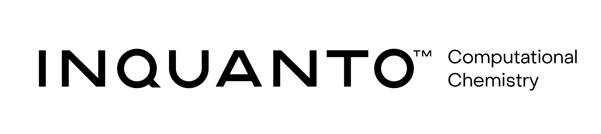

Tutorial: InQuanto + qnexus¶
Hamiltonian averaging project on H1 Emulator using InQuanto and qnexus to estimate the ground-state energy for CH2
This notebook demonstrates a computable workflow with InQuanto and Nexus. To access Nexus, the user needs to use inquanto.extensions.nexus to submit circuits and retrieve results. Today, the intention is to submit circuits to the H1-1 emulator (H1-1E) for execution. Once results are available, they can be retrieved and processed by InQuanto to determine the ground-state energy.
1. Nexus Project Name Setup
We can use a new Nexus project for managing our chemistry jobs, or we can re-use an old one.
from qnexus.client import projects
project_name = f"InQuanto::Project"
project_ref = projects.get_or_create(
name=project_name, description="A demo project with inquanto-nexus", properties={}
)
Login Successful.
2. Chemical Specification
Here we will run an example calculation on methylene, CH2.
Initially, the geometry of CH2 is specified, loaded into inquanto.geometries.GeometryMolecular and rendered as a pandas DataFrame.
The geometry we use is from CCSD(T)=FULL/aug-cc-pVTZ level calculations presented on the Computational Chemistry Comparison and Benchmark DataBase. https://cccbdb.nist.gov/
from inquanto.geometries import GeometryMolecular
xyz = [
["C", [0.0, 0.0, 0.1051320]],
["H", [0.0, 0.9882630,-0.3153960]],
["H", [0.0, -0.9882630, -0.3153960]],
]
geometry = GeometryMolecular(xyz, "angstrom")
geometry.df
| element | x | y | z | atom | |
|---|---|---|---|---|---|
| id | |||||
| 0 | C | 0.0 | 0.000000 | 0.105132 | C1 |
| 1 | H | 0.0 | 0.988263 | -0.315396 | H2 |
| 2 | H | 0.0 | -0.988263 | -0.315396 | H3 |
This structure can be visualised using NGLview, via the InQuanto-NGLView extension.
#from inquanto.extensions.nglview import VisualizerNGL
#visualizer_nglview = VisualizerNGL(geometry)
#visualizer_nglview.visualize_molecule()
Next, we construct an InQuanto driver object, which is used to prepare the qubit operators and spaces needed to construct the circuits.
To do this, we use the InQuanto interface to PySCF.
For a basic driver we need to specify the charge and multiplicity of our system. Here we construct a more advanced driver by applying an orbital rotation (transf). This transformation is to the basis of natural orbitals obtained after performing a CASSCF calculation with an active space of 2 electrons in 3 spatial (6-spin) orbitals
from inquanto.extensions.pyscf import (
FromActiveSpace,
ChemistryDriverPySCFMolecularROHF,
CASSCF,
)
charge = 0
basis = "sto-3g"
multiplicity = 1
ncas = 3
nelecas = 2
frozen = FromActiveSpace(ncas=ncas, nelecas=nelecas)
transf = CASSCF(ncas=ncas, nelecas=nelecas)
point_group_symmetry=True
driver_parameters = {
"geometry": geometry, # As a GeometryMolecular object
"charge": charge,
"basis": basis,
"transf": transf,
"frozen": frozen,
"multiplicity": multiplicity,
"point_group_symmetry": True,
}
driver = ChemistryDriverPySCFMolecularROHF(**driver_parameters)
When the driver variables are defined we can use its get_system method to obtain the fermionic hamiltonian, space, and state. We’ll carry these objects forward to build our circuits.
fermion_hamiltonian, fermion_space, fermion_state = driver.get_system()
We can also inspect various results of our calculation, such as the point group symmetry or orbital symmetries.
f"This structure has a point group of {driver.point_group}"
'This structure has a point group of C2v'
As well as obtaining the objects needed to construct circuits, we can also use some driver convenience functions to perform classical computational chemistry methods to give results for comparison.
Here we calculate Coupled Cluster Singles & Doubles (CCSD) energies classically for comparison.
ccsd_energy = driver.run_ccsd()
scf_energy = driver.run_hf()
ccsd_correlation_energy = scf_energy - ccsd_energy
# correlation is positive: ccsd should be lower in energy than HF
print(f"Hartree Fock (RHF) energy: {scf_energy} Ha")
print(f"CCSD energy: {ccsd_energy} Ha")
print(f"CCSD energy correlation energy: {ccsd_correlation_energy} Ha")
Hartree Fock (RHF) energy: -38.338090203517844 Ha
CCSD energy: -38.35882707387484 Ha
CCSD energy correlation energy: 0.020736870356998338 Ha
3. Review Hamiltonian
Here, we inspect the fermionic Hamiltonian we generated for CH2 with HF in the STO-3G basis set. Initially, we view the Fermionic strings. Each index in the string corresponds to action on a spin orbital. The symbol, ^, following an index denotes electron creation, otherwise it is an electron destroying action. Our Hamiltonian contains 132 Fermionic strings (discluding the identity term).
fermion_hamiltonian.df()
| Coefficients | Terms | |
|---|---|---|
| 0 | -37.107696 | |
| 1 | -0.968197 | F0^ F0 |
| 2 | -0.030656 | F0^ F4 |
| 3 | 0.353000 | F1^ F0^ F0 F1 |
| 4 | 0.353000 | F1^ F0^ F0 F1 |
| ... | ... | ... |
| 128 | 0.024456 | F5^ F4^ F2 F3 |
| 129 | 0.024456 | F5^ F4^ F2 F3 |
| 130 | 0.280721 | F5^ F4^ F4 F5 |
| 131 | 0.280721 | F5^ F4^ F4 F5 |
| 132 | -0.271034 | F5^ F5 |
133 rows × 2 columns
The Hamiltonian can now be converted into a qubit representation. We use the Jordan-Wigner transformation to accomplish this task. Each Fermionic string is now transformed to a Pauli operator (I, X, Y, Z) acting on a qubit q[i], where:
qis the name of the qubit register;iis the qubit index.
I)
from inquanto.mappings import QubitMappingJordanWigner
jw_map = QubitMappingJordanWigner()
qubit_hamiltonian_jw = fermion_hamiltonian.qubit_encode(jw_map)
qubit_hamiltonian_jw.df()
| Coefficient | Term | Coefficient Type | |
|---|---|---|---|
| 0 | -37.272826 | <class 'numpy.float64'> | |
| 1 | -0.462449 | Z5 | <class 'numpy.float64'> |
| 2 | -0.462449 | Z4 | <class 'numpy.float64'> |
| 3 | 0.140360 | Z4 Z5 | <class 'numpy.float64'> |
| 4 | -0.243190 | Z3 | <class 'numpy.float64'> |
| ... | ... | ... | ... |
| 57 | 0.148791 | Z0 Z3 | <class 'numpy.float64'> |
| 58 | 0.135623 | Z0 Z2 | <class 'numpy.float64'> |
| 59 | -0.005837 | Z0 X1 Z2 Z3 Z4 X5 | <class 'numpy.float64'> |
| 60 | -0.005837 | Z0 Y1 Z2 Z3 Z4 Y5 | <class 'numpy.float64'> |
| 61 | 0.176500 | Z0 Z1 | <class 'numpy.float64'> |
62 rows × 3 columns
4. Chemically Aware Unitary Coupled Cluster State-Preparation
We now build the Unitary Coupled Cluster Singles & Doubles (UCCSD) state-preparation circuit. This captures a similar level of electronic correlation as classical CCSD.
Inside the state and space from our driver is symmetry information and orbital occupancies, which are now inputted into the FermionSpaceAnsatzChemicallyAwareUCCSD object to generate the UCCSD state-preparation circuit. We can inspect some of this data as such:
fermion_space.print_state(fermion_state)
0 0a : 1
1 0b : 1
2 1a : 0
3 1b : 0
4 2a : 0
5 2b : 0
Then, we use these quantities to build the ansatz state-preparation circuit:
from inquanto.ansatzes import FermionSpaceAnsatzChemicallyAwareUCCSD
from pytket.circuit import OpType
ansatz = FermionSpaceAnsatzChemicallyAwareUCCSD(fermion_space, fermion_state)
As a first, we print some basic circuit statistics:
- # of qubits;
- # of symbols;
- # of CX gates.
print(f"# of qubits: {ansatz.n_qubits}")
print(f"# of symbols: {ansatz.n_symbols}")
print(f"# of 2=qubit gates: {ansatz.circuit_resources()['gates_2q']}")
# of qubits: 6
# of symbols: 4
# of CX gates: 23
We can also render the State-Preparation circuit in jupyter for inspection
from pytket.circuit.display import render_circuit_jupyter
render_circuit_jupyter(ansatz.state_circuit)
5. Perform a classical VQE project to obtain parameters that characterise the ground-state wavefunction
In the cell below we perform a variational quantum eigensolver using inquanto’s express module. This is a statevector backed only convenience function. Firstly we instantiate a statevector NexusConfig into our NexusBackend. Then we provide the run_vqe algorithm class with the qubit hamiltonian and the ansatz circuit. A loop then beings where, at each step, the statevector job is submitted to our Nexus project and executed. These jobs can be inspected as https://nexus.quantinuum.com/ . When the VQE cycle has converged with respect to energy the cycle stops and we can inspect the total energy obtained and the symbol coefficients of our parameterized circuit
from inquanto.express import run_vqe
from qnexus import AerStateConfig
vqe = run_vqe(ansatz, qubit_hamiltonian_jw, AerStateConfig(), with_gradient=False, project_ref=project_ref)
print(f"VQE Energy: {vqe.final_value}")
gs_parameters = vqe.final_parameters
print(vqe.final_parameters)
Started using project with name: InQuanto::Project
# TIMER BLOCK-0 BEGINS AT 2023-10-26 08:04:47.252666
# TIMER BLOCK-0 ENDS - DURATION (s): 197.9548447 [0:03:17.954845]
VQE Energy: -38.35882707384031
{d0: -0.3732936553004727, d1: -0.004352090240814768, s0: -2.206496678468692e-06, s1: -1.8038857692025435e-06}
We can relate these coefficients to the fermionic exponents:
print("Fermion Excitations and Amplitudes")
print("==================================")
print("Exponent\t\t\t\t\tAmplitude\t\tSymbol")
for fermion_operator, symbol in ansatz._fermion_operator_exponents:
parameter = vqe.final_parameters[symbol]
print(f"{fermion_operator}\t{parameter}\t{symbol}")
Fermion Excitations and Amplitudes
==================================
Exponent Amplitude Symbol
(1.0, F2^ F0 F3^ F1 ), (-1.0, F1^ F3 F0^ F2 ) -0.3732936553004727 d0
(1.0, F4^ F0 F5^ F1 ), (-1.0, F1^ F5 F0^ F4 ) -0.004352090240814768 d1
(1.0, F4^ F0 ), (-1.0, F0^ F4 ) -2.206496678468692e-06 s0
(1.0, F5^ F1 ), (-1.0, F1^ F5 ) -1.8038857692025435e-06 s1
6. Hamiltonian Averaging using InQuanto Computables
In general, InQuanto uses ‘Computables’ to calculate the chemical quantity of relevance. A protocol is then the blueprint which defines how we calculate the chemical quantity on the quantum computer. The simplest computables, such as expectation values of an operator on a state, can be evaluated directly using a single protocol. More details on these structures can be found at https://inquanto.quantinuum.com/
6. a. Prepare Protocol
We will re-use our ansatz and operator from above.
The protocol we use today is called PauliAveraging, and is one way to perform Hamiltonian Averaging. This protocol generates measurement circuits from the Hamiltonian and state-preparation circuit. These circuits will be submitted to the H1 emulator (H1-1E) via Nexus. Once the results are retrieved, the protocol can then estimate the expectation value of the Pauli words. These expectations are multiplied by the corresponding coefficient in the Hamiltonian, and summed to obtain the ground-state energy.
from inquanto.protocols import PauliAveraging
from qnexus import QuantinuumConfig
from inquanto.core._tket import PauliPartitionStrat
configuration = QuantinuumConfig(device_name="H1-1E", user_group="Default - UK")
protocol = PauliAveraging(
configuration,
shots_per_circuit=5000,
pauli_partition_strategy=PauliPartitionStrat.CommutingSets,
project_ref=project_ref
)
Started using project with name: InQuanto::Project
6. b. Partition Measurement Symmetry Verification
We recognise that our system possesses C2v point group symmetry. This can be exploited in the Hamiltonian Averaging procedure since we know the parity of certain Pauli words and therefore their expectation values.
These Pauli words corresponding to symmetry operations - mirror planes and pi radian rotations.
One can use InQuanto to calculate the Pauli words (within Jordan Wigner encoding)
pauli_symmetries = jw_map.operator_map(fermion_space.symmetry_operators_z2_in_sector(fermion_state))
for op in pauli_symmetries:
print(op)
(1.0, Z2 Z3)
(1.0, Z0 Z1 Z2 Z3 Z4 Z5)
(-1.0, Z0 Z2 Z4)
The protocol can be modified to include Symmetry Verification step. The flavour we use in InQuanto is called Partition Measurement Symmetry Verification (PMSV). The steps are as follows:
- Find largest Abelian point group of molecule. Transformations of this point group are Pauli-symmetries.
- Build symmetry verifiable circuits using the measurement reduction facility in tket. The operators that we need to measure on the quantum device to solve out problem consist of Pauli-Is, Pauli-Xs, Pauli-Ys and Pauli-Zs across the qubit register. These operations can be partitioned into commuting sets. For element in a commuting set, if the Pauli-symmetries commute element-wise, it can be added to the commuting set. This way, each commuting set is symmetry verifiable.
- Post-select on measurement result before counting bitstrings to compute expectation value of problem Hamiltonian. The quantity to post-select on is the XOR sum over the bit-strings needed to compute expectation value of Pauli-symmetry.
from inquanto.protocols import PMSV
mitms_pmsv = PMSV(pauli_symmetries)
protocol.clear()
/inquanto/protocols/averaging/_mitigation.py:205: UserWarning: The PMSV is still experimental.
warnings.warn(f"The {self.__class__.__name__} is still experimental.")
<inquanto.protocols.averaging._pauli_averaging.PauliAveraging at 0x7f15ab798400>
6. c. Build Protocol
We now build and compile the measurement circuits for the shot based protocol, including instructions for symmetry verification noise mitigation with Hamiltonian Averaging. Note that compilation is also performed using Nexus. The uncompiled circuits are sent and compiled circuits are retrieved. When all compiled circuits are obtained we can launch the execution job.
protocol.build(vqe.final_parameters, ansatz, qubit_hamiltonian_jw, noise_mitigation=mitms_pmsv).compile_circuits()
<inquanto.protocols.averaging._pauli_averaging.PauliAveraging at 0x7f15ab798400>
protocol.dataframe_circuit_shot()
| Qubits | Depth | Depth2q | DepthCX | Shots | |
|---|---|---|---|---|---|
| 0 | 6 | 46 | 24 | 0 | 5000 |
| 1 | 6 | 40 | 20 | 0 | 5000 |
| 2 | 6 | 46 | 24 | 0 | 5000 |
| 3 | 6 | 46 | 24 | 0 | 5000 |
| 4 | 6 | 50 | 26 | 0 | 5000 |
| 5 | 6 | 47 | 24 | 0 | 5000 |
| Sum | - | - | - | - | 30000 |
circuits=protocol.get_circuits()
We can examine the circuits object here, which is a list of NexusCircuits (as opposed to tket Circuits like usual). Not only does this contain a tket circuit, but it also contains information about the job and its submission
circuits[0]
NexusCircuit(id=fde92d6f-5c54-45cd-85dd-8f13a1d131a6, submitted_time=2023-10-26 08:08:16.504778+00:00, project_name=InQuanto::Project, project_id=f225abb6-e9b9-472a-92b6-32a6f066b796)[PhasedX(2.5, 0) q[0]; PhasedX(2.5, 0.5) q[1]; PhasedX(0.5, 0) q[2]; PhasedX(0.5, 0.5) q[3]; PhasedX(0.5, 0) q[4]; PhasedX(0.5, 0.5) q[5]; ZZPhase(0.5) q[2], q[0]; PhasedX(0.118823, 1.5) q[0]; PhasedX(2.11882, 1.5) q[2]; ZZPhase(0.5) q[2], q[0]; ZZPhase(0.5) q[4], q[0]; PhasedX(0.5, 0) q[2]; PhasedX(2.00139, 0.5) q[0]; ZZPhase(0.5) q[2], q[3]; PhasedX(2.00139, 1.5) q[4]; ZZPhase(0.5) q[4], q[0]; PhasedX(2.5, 1) q[2]; PhasedX(0.5, 0) q[3]; PhasedX(0.5, 0) q[0]; ZZPhase(0.5) q[3], q[2]; PhasedX(2.5, 0) q[4]; ZZPhase(0.5) q[0], q[1]; PhasedX(0.5, 0.5) q[2]; ZZPhase(0.5) q[4], q[5]; PhasedX(0.5, 0.5) q[0]; ZZPhase(0.5) q[2], q[1]; PhasedX(1, 0.5) q[4]; PhasedX(1.5, 0) q[5]; PhasedX(0.5, 0.5) q[1]; ZZPhase(0.5) q[1], q[4]; PhasedX(0.5, 0) q[4]; ZZPhase(0.5) q[4], q[0]; PhasedX(2, 0) q[0]; PhasedX(2, 0.5) q[4]; ZZPhase(0.5) q[4], q[0]; PhasedX(0.5, 0) q[0]; PhasedX(0.5, 0) q[4]; ZZPhase(0.5) q[1], q[4]; PhasedX(2.5, 0.5) q[1]; PhasedX(1, 1.5) q[4]; ZZPhase(0.5) q[2], q[1]; PhasedX(1.5, 0.5) q[1]; PhasedX(1.5, 1.5) q[2]; ZZPhase(0.5) q[3], q[2]; PhasedX(0.5, 0) q[3]; ZZPhase(0.5) q[4], q[3]; PhasedX(0.5, 1.5) q[3]; ZZPhase(0.5) q[3], q[2]; PhasedX(0.5, 0.5) q[2]; ZZPhase(0.5) q[2], q[5]; PhasedX(3.5, 0) q[5]; ZZPhase(0.5) q[5], q[1]; PhasedX(2, 1.5) q[1]; PhasedX(2, 1.5) q[5]; ZZPhase(0.5) q[5], q[1]; PhasedX(1.5, 0) q[1]; PhasedX(0.5, 1) q[5]; Measure q[1] --> c[1]; ZZPhase(0.5) q[2], q[5]; PhasedX(1.5, 1.5) q[2]; PhasedX(3.5, 1) q[5]; ZZPhase(0.5) q[3], q[2]; PhasedX(1.5, 0.5) q[3]; ZZPhase(0.5) q[4], q[3]; PhasedX(1, 1) q[4]; ZZPhase(0.5) q[0], q[4]; PhasedX(0.5, 0) q[0]; PhasedX(0.5, 0.5) q[4]; Measure q[4] --> c[4]; ZZPhase(0.5) q[0], q[2]; ZZPhase(0.5) q[0], q[3]; PhasedX(0.5, 0.5) q[2]; Measure q[2] --> c[2]; ZZPhase(0.5) q[0], q[5]; PhasedX(0.5, 1.5) q[3]; Measure q[3] --> c[3]; PhasedX(0.5, 1.5) q[0]; PhasedX(0.5, 0.5) q[5]; Measure q[0] --> c[0]; Measure q[5] --> c[5]; ]
With the circuits returned, we can launch them for execution using protocol.launch(). This will tell Nexus to run the list of circuits in the protocol on the backend, returning a ResultsHandle for each circuit so that we may later retrieve them when our hardware/emulation is complete.
results_handles=protocol.launch()
#wait
The result_handles is a list of ResultHandle objects. These are made up of tuples of the job id and an enumerator.
print(results_handles)
[ResultHandle('723e324f-dfbc-458f-a459-5a26afa86ba3', 1199879), ResultHandle('723e324f-dfbc-458f-a459-5a26afa86ba3', 1199880), ResultHandle('723e324f-dfbc-458f-a459-5a26afa86ba3', 1199881), ResultHandle('723e324f-dfbc-458f-a459-5a26afa86ba3', 1199882), ResultHandle('723e324f-dfbc-458f-a459-5a26afa86ba3', 1199883), ResultHandle('723e324f-dfbc-458f-a459-5a26afa86ba3', 1199884)]
6. e. Retrieve results from Nexus
Results can be retrieved from Nexus using the computables “retrieve_distributions” function when they have completed.
results = protocol.retrieve(results_handles)
Now our protocol is complete and we can examine and evaluate it! Firstly we take a peak at the results for the individual Pauli strings we measured for our hamiltonian and PMSV. Note that sample size is below 5000 has symmetry violating shots are discarded. Some Pauli strings have been measured by multiple circuits and so have more than 5000 samples.
protocol.dataframe_measurements()
| pauli_string | mean | stderr | umean | sample_size | |
|---|---|---|---|---|---|
| 0 | Z1 Z5 | -0.728972 | 0.009978 | -0.729+/-0.010 | 4708 |
| 1 | Y1 Z3 Z4 Y5 | 0.012744 | 0.014574 | 0.013+/-0.015 | 4708 |
| 2 | Z2 | 0.728972 | 0.009978 | 0.729+/-0.010 | 4708 |
| 3 | Y2 Y3 X4 X5 | 0.005788 | 0.014642 | 0.006+/-0.015 | 4665 |
| 4 | Z4 | 0.995327 | 0.001407 | 0.9953+/-0.0014 | 4708 |
| 5 | Y0 Z1 Z3 Y4 | -0.003215 | 0.014643 | -0.003+/-0.015 | 4665 |
| 6 | X2 X3 Y4 Y5 | -0.008321 | 0.014608 | -0.008+/-0.015 | 4687 |
| 7 | X0 X1 Y2 Y3 | 0.635161 | 0.011283 | 0.635+/-0.011 | 4687 |
| 8 | Y0 X1 X4 Y5 | 0.005731 | 0.014571 | 0.006+/-0.015 | 4711 |
| 9 | Z3 Z5 | 0.726045 | 0.010069 | 0.726+/-0.010 | 4665 |
| 10 | X1 Z2 Z3 X5 | 0.013169 | 0.014574 | 0.013+/-0.015 | 4708 |
| 11 | X0 Z1 Z2 Z3 X4 Z5 | -0.024055 | 0.014653 | -0.024+/-0.015 | 4656 |
| 12 | X0 Z1 X2 X3 Z4 X5 | 0.006580 | 0.014571 | 0.007+/-0.015 | 4711 |
| 13 | Y0 Z1 Z2 Z3 Y4 Z5 | -0.013934 | 0.014641 | -0.014+/-0.015 | 4665 |
| 14 | Y0 Z1 Z2 Y4 | -0.003215 | 0.014643 | -0.003+/-0.015 | 4665 |
| 15 | X0 X1 Y4 Y5 | 0.022402 | 0.014605 | 0.022+/-0.015 | 4687 |
| 16 | X1 Z2 Z4 X5 | 0.027188 | 0.014570 | 0.027+/-0.015 | 4708 |
| 17 | Z0 Z1 | 0.996160 | 0.001279 | 0.9962+/-0.0013 | 4687 |
| 18 | Z0 Z3 | -0.995327 | 0.001407 | -0.9953+/-0.0014 | 4708 |
| 19 | X0 Y1 Y2 X3 | -0.656549 | 0.010991 | -0.657+/-0.011 | 4711 |
| 20 | X1 Z3 Z4 X5 | 0.027188 | 0.014570 | 0.027+/-0.015 | 4708 |
| 21 | X2 Y3 Y4 X5 | 0.007429 | 0.014571 | 0.007+/-0.015 | 4711 |
| 22 | Z5 | 0.996134 | 0.001288 | 0.9961+/-0.0013 | 4656 |
| 23 | Y1 Z2 Z4 Y5 | 0.012744 | 0.014574 | 0.013+/-0.015 | 4708 |
| 24 | X0 Z2 Z3 X4 | 0.013934 | 0.014641 | 0.014+/-0.015 | 4665 |
| 25 | Z4 Z5 | 0.996160 | 0.001279 | 0.9962+/-0.0013 | 4687 |
| 26 | Y1 Z2 Z3 Y5 | 0.027613 | 0.014570 | 0.028+/-0.015 | 4708 |
| 27 | Y0 Z1 Y2 X3 Z4 X5 | 0.001072 | 0.014643 | 0.001+/-0.015 | 4665 |
| 28 | X0 Z1 Z3 X4 | -0.023986 | 0.014567 | -0.024+/-0.015 | 4711 |
| 29 | Y1 Z2 Z3 Z4 Y5 | 0.027188 | 0.014570 | 0.027+/-0.015 | 4708 |
| 30 | Y0 X1 X2 Y3 | -0.642182 | 0.011235 | -0.642+/-0.011 | 4656 |
| 31 | Z0 | -0.725998 | 0.010024 | -0.726+/-0.010 | 4708 |
| 32 | Z3 | 0.728972 | 0.009978 | 0.729+/-0.010 | 4708 |
| 33 | Y1 Y2 X3 X4 | -0.011381 | 0.014654 | -0.011+/-0.015 | 4657 |
| 34 | Y0 Z2 Z3 Y4 | 0.024055 | 0.014653 | 0.024+/-0.015 | 4656 |
| 35 | Y2 X3 X4 Y5 | 0.007074 | 0.014642 | 0.007+/-0.015 | 4665 |
| 36 | Z2 Z5 | 0.726045 | 0.010069 | 0.726+/-0.010 | 4665 |
| 37 | X0 Z1 Z2 Z3 X4 | -0.003215 | 0.014643 | -0.003+/-0.015 | 4665 |
| 38 | Y0 Z1 Z2 Z3 Y4 | -0.023986 | 0.014567 | -0.024+/-0.015 | 4711 |
| 39 | Z0 Z2 | -0.995327 | 0.001407 | -0.9953+/-0.0014 | 4708 |
| 40 | Z1 Z2 | -0.996134 | 0.001288 | -0.9961+/-0.0013 | 4656 |
| 41 | Z0 X1 Z2 Z3 Z4 X5 | -0.027613 | 0.014570 | -0.028+/-0.015 | 4708 |
| 42 | X0 Y1 Y4 X5 | 0.005731 | 0.014571 | 0.006+/-0.015 | 4711 |
| 43 | Z0 Y1 Z2 Z3 Z4 Y5 | -0.013169 | 0.014574 | -0.013+/-0.015 | 4708 |
| 44 | Z1 Z3 | -0.996134 | 0.001288 | -0.9961+/-0.0013 | 4656 |
| 45 | Y1 X2 X3 Y4 | 0.013746 | 0.014655 | 0.014+/-0.015 | 4656 |
| 46 | Z2 Z4 | 0.725998 | 0.010024 | 0.726+/-0.010 | 4708 |
| 47 | X1 X2 Y3 Y4 | -0.014175 | 0.014655 | -0.014+/-0.015 | 4656 |
| 48 | Y0 Y1 X4 X5 | 0.022402 | 0.014605 | 0.022+/-0.015 | 4687 |
| 49 | X0 Z1 Z2 X4 | -0.023986 | 0.014567 | -0.024+/-0.015 | 4711 |
| 50 | Y0 Y1 X2 X3 | 0.634734 | 0.011288 | 0.635+/-0.011 | 4687 |
| 51 | Z0 Z5 | -0.729440 | 0.010025 | -0.729+/-0.010 | 4657 |
| 52 | Z0 Z4 | -0.728972 | 0.009978 | -0.729+/-0.010 | 4708 |
| 53 | Z2 Z3 | 1.000000 | 0.000000 | 1.0+/-0 | 28084 |
| 54 | Y0 Z1 Y2 Y3 Z4 Y5 | -0.007503 | 0.014642 | -0.008+/-0.015 | 4665 |
| 55 | X0 Z1 X2 Y3 Z4 Y5 | -0.019540 | 0.014652 | -0.020+/-0.015 | 4657 |
| 56 | X1 Z2 Z3 Z4 X5 | 0.012744 | 0.014574 | 0.013+/-0.015 | 4708 |
| 57 | Z1 | -0.726045 | 0.010069 | -0.726+/-0.010 | 4665 |
| 58 | Z1 Z4 | -0.729440 | 0.010025 | -0.729+/-0.010 | 4657 |
| 59 | X1 Y2 Y3 X4 | 0.018467 | 0.014569 | 0.018+/-0.015 | 4711 |
| 60 | Z3 Z4 | 0.725998 | 0.010024 | 0.726+/-0.010 | 4708 |
Then we can evaluate our expectation value using the coefficients in our Hamiltonian.
energy_nexus = protocol.evaluate_expectation_value(ansatz, qubit_hamiltonian_jw)
6. f. Post-process classically to evaluate ground-state energy
Below we perform a little analysis of our results.
import numpy
rel_error = (
100
* numpy.absolute(vqe.final_value - energy_nexus)
/ numpy.absolute(vqe.final_value)
)
abs_error = numpy.absolute(vqe.final_value - energy_nexus)
correlation_energy_nexus = scf_energy - energy_nexus
print(f"Energy [Hamiltonian Averaging] on H1-1E via nexus: {energy_nexus} Ha")
print(f"Energy [Benchmark]: {ccsd_energy} Ha")
print(
f"\nCorrelation Energy [Hamiltonian Averaging] on H1-1E via nexus: {correlation_energy_nexus} Ha"
)
print(f"Correlation Energy [Benchmark]: {ccsd_correlation_energy} Ha")
print(f"\nRelative Error [Hamiltonian Averaging] on H1-1E via nexus: {rel_error} %")
print(f"\nAbsolute Error [Hamiltonian Averaging] on H1-1E via nexus: {abs_error} Ha")
Energy [Hamiltonian Averaging] on H1-1E via nexus: -38.35429920140337 Ha
Energy [Benchmark]: -38.35882707387484 Ha
Correlation Energy [Hamiltonian Averaging] on H1-1E via nexus: 0.016208997885527765 Ha
Correlation Energy [Benchmark]: 0.020736870356998338 Ha
Relative Error [Hamiltonian Averaging] on H1-1E via nexus: 0.011803990847327247 %
Absolute Error [Hamiltonian Averaging] on H1-1E via nexus: 0.004527872436938196 Ha
For this small system we’ve got pretty good results. Our noisy backend averaging is 0.004 Ha from the statevector (noiseless) result when using 5000 shots and PMSV. This represents a relative error of about 0.01 %
{kind=link}